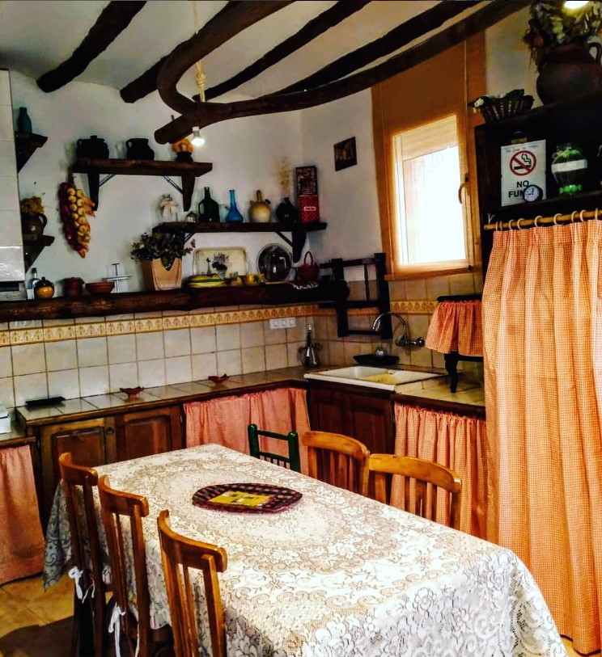
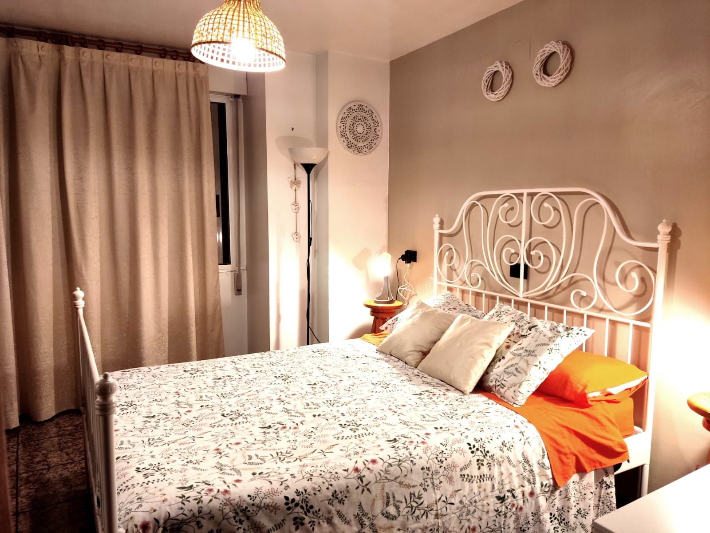
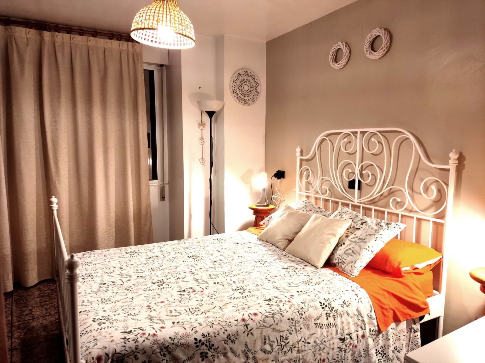

Conoce nuestras Casas Rurales
Casa Elina I

Ideal para familias y grupos grandes. Su decoración, basada en herramientas antiguas de labranza, aporta un encanto auténtico y rural.
Casa Elina II
 

Ideal para parejas o pequeños grupos. En el corazón del pueblo, con una decoración rústica y un ambiente acogedor.